Lección: Usando Componentes Swing
Sección: Cómo Usar Varios Componentes
Cómo Hacer Diálogos
Una ventana Diálogo es una subventana independiente destinada a mostrar un aviso temporal aparte de la Ventana principal de Aplicación de Swing. La mayoría de los Diálogos presentan un mensaje de error o advertencia a un usuario, pero los Diálogos pueden presentar imágenes, árboles de directorio, o casi cualquier cosa compatible con la Aplicación principal de Swing que las gestiona.
Por conveniencia, varias clases componente de Swing pueden instanciarse directamente y mostrar diálogos
. Para crear diálogos estándar, simples, use la clase
JOptionPane.
La clase ProgressMonitor puede soportar un diálogo que muestre el
progreso de una operación. Otras dos clases, JColorChooser y
JFileChooser, también soportan diálogos estándar. Para sacar un
diálogo de impresión, puede usar la IPA de
Impresión. Para crear un dialogo
personalizado, use la clase
JDialog
directamente.
El código para diálogos simples puede ser mínimo. Por ejemplo, aquí tiene un diálogo informativo:
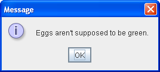
Aquí está el código que lo crea y muestra:
JOptionPane.showMessageDialog(frame, "Eggs are not supposed to be green.");
El resto de esta sección cubre los siguientes tópicos:
- Una Visión General de los Diálogos
- El Ejemplo DialogDemo
- Características de JOptionPane
- Crear y Mostrar Diálogos Simples
- Personaliza el Texto del Botón
- Obtener la Entrada del Usuario desde un Diálogo
- Parar el Cierre Automático de un Diálogo
- La IPA de Dialog
- Ejemplos que Usan Diálogos
Una Visión General de los Diálogos
Cada diálogo es dependiente de un componente Marco. Cuando el Marco es destruído, así lo son sus Diálogos
dependientes. Cuando el marco es minimizado, sus Diálogos dependientes también desaparecen de la pantalla.
Cuando el marco se restaura, sus Diálogos dependientes vuelven a la pantalla. Una clase de Swing JDialog hereda
este comportamiento de la clase de AWT Dialog.
Un Diálogo puede ser modal. Cuando un Diálogo modal Dialog es visible, bloque la entrada del usuario al
resto de ventanas en el programa. JOptionPane crea JDialogs que son modales. Para crear un Diálogo
no modal, debe usar la clase JDialog directamente.
Empezando con el KDJ 7, usted puede modificar el comportamiento de la modalidad de una ventana de diálogo usando la nueva IPA de Modalidad. Vea La Nueva IPA de Modalidad para más detalles.
La clase JDialog es una subclase de la clase de AWT
java.awt.Dialog.
Añade un contenedor panel raíz y soporte para la operación de cierre por defecto al
objeto Dialog. Estas son las mismas características que JFrame tiene, y usar
JDialog directamente es muy similar a usar JFrame. Si va a usar JDialog
directamente, entonces debería entender el material en
Usando Contenedores de Nivel Superior y Cómo Hacer Marcos,
especialmente Responder a Eventos de Cierre de Ventana.
Incluso cuando use JOptionPane para implementar un diálogo, estará todavía usando un
JDialog entre bastidores. La razón es que JOptionPane es simplemente un contenedor que
puede automáticamente crear un JDialog y añadirse a sí mismo al panel de contenido del
JDialog.
El Ejemplo DialogDemo
Aquí tiene una foto de una aplicación que visualiza diálogos.
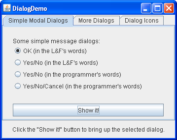
Pruebe esto:
-
Pulse el botón Lanzar para ejecutar la Demostración Dialog usando
Java™ Web Start (
descargue KDJ 7 o posterior). Alternativamente, para compilar y ejecutar el ejemplo por usted
mismo, consulte el índice de ejemplos.

-
Pulse el botón Show it!.
Un diálogo modal aparecerá. Hasta que usted lo cierre, la aplicación no responderá, aunque se repintará a sí misma si es necesario. Puede cerrar el diálogo o pulsando el botón en el diálogo o explícitamente, usando las decoraciones de la ventana de diálogo. -
En el panel More Dialogs, pulse el botón de opción y después el botón Show it!.
Un diálogo no modal aparecerá. Note que la ventana DialogDemo permanece plenamente funcional mientras el diálogo no modal se muestra. -
Mientras se está mostrando el diálogo no modal, minimize la ventana DialogDemo.
El diálogo desaparecerá de la pantalla hasta que restaure la ventana DialogDemo.
Características de JOptionPane
Usando JOptionPane, puede crear y personalizar rápidamente varias clases diferentes de diálogos.
JOptionPane ofrece soporte para exponer diálogos estándar, ofreciendo iconos, especificando el
título del diálogo y el texto, y personalizando el texto del botón. Otras características le permiten
personalizar los componentes que el diálogo muestra y especificar si el diálogo debería aparecer en pantalla.
Puede incluso especificar que un panel de opciones se coloque a sí mismo en un
marco interno (JInternalFrame) en vez de un
JDialog.
Cuando cree un JOptionPane, el código específico de la apariencia añade componentes al
JOptionPane y determina la disposición de esos componentes.
El soporte de iconos de JOptionPane le permite fácilmente especificar qué icono visualiza el
diálogo. Puede usar un icono personalizado, ningún icono en absoluto, o cualquier de los cuatro iconos
estándar de JOptionPane (pregunta, información, aviso, y error). Cada Apariencia tiene sus propias
versiones de los cuatro iconos estándar. La siguiente figura muestra los iconos usados en la Apariencia de
Java (y Windows).
| Descripción del Icono | Apariencia Java | Apariencia Windows |
|---|---|---|
| pregunta | ||
| información | ||
| aviso | ||
| error |
Crear y Mostrar Diálogos Simples
Para la mayoría de los diálogos simples modales, usted crea y muestra el diálogo usando uno de los métodos
showXxxDialog de JOptionPane. Si su diálogo fuese un
marco interno, entonces añada Internal después de
show ─ por ejemplo, showMessageDialog cambia a
showInternalMessageDialog. si necesita controlar el comportamiento del cierre de la ventana del
diálogo o si no quiere que el diálogo sea modal, entonces debería instanciar directamente
JOptionPane y añadirlo a una instancia JDialog. Entonces invoque
setVisible(true) en JDialog para hacerlo aparececer.
Los dos métodos showXxxDialog más útiles son showMessageDialog y
showOptionDialog. El método showMessageDialog muestra un diálogo simple de un sólo
botón. El método showOptionDialog muestra un diálogo personalizado ─ puede
visualizar una variedad de botones con texto personalizado en el botón, y puede contener un mensaje de texto
estándar o una colección de componentes.
Los otros dos métodos showXxxDialog son usados menos a menudo. El método
showConfirmDialog pide al usuario confirmar algo, pero presenta texto estándar en el botón (Yes/No
o el equivalente traducido, por ejemplo) en vez de texto en el botón personalizado a la situación del usuario
(Iniciar/Cancelar, por ejemplo). Un cuarto método, showInputDialog, está diseñado para visualizar
un diálogo modal que obtiene una cadena del usuario, ya sea usando un campo de texto, una lista combo no
editable o una lista.
Aquí tiene algunos ejemplos, tomados de
DialogDemo.java, de usar showMessageDialog,
showOptionDialog, y el constructor JOptionPane. Para más codigo de ejemplo, vea
DialogDemo.java y los otros programas listados en
Ejemplos que Usan Diálogos.
-
showMessageDialog -
Muestra un diálogo modal con un botón, el cual es etiquetado "OK" (o el equivalente traducido).
Puede fácilmente especificar el mensaje, el icono, y el título que el diálogo visualiza. Aquí tiene algunos
ejemplos de uso de
showMessageDialog://título por defecto e icono JOptionPane.showMessageDialog(frame, "Eggs are not supposed to be green.");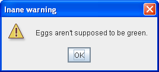 //título personalizado, icono de aviso JOptionPane.showMessageDialog(frame, "Eggs are not supposed to be green.", "Inane warning", JOptionPane.WARNING_MESSAGE);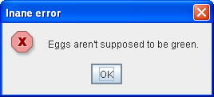 //título personalizado, icono de error JOptionPane.showMessageDialog(frame, "Eggs are not supposed to be green.", "Inane error", JOptionPane.ERROR_MESSAGE);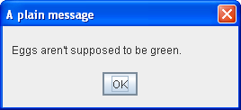 //título personalizado, sin icon JOptionPane.showMessageDialog(frame, "Eggs are not supposed to be green.", "A plain message", JOptionPane.PLAIN_MESSAGE);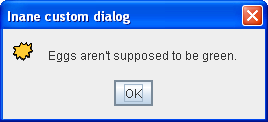 //título personalizado, icono personalizado JOptionPane.showMessageDialog(frame, "Eggs are not supposed to be green.", "Inane custom dialog", JOptionPane.INFORMATION_MESSAGE, icon); -
showOptionDialog -
Muestra un diálogo modal con el título, mensaje, iconos y botones especificados. Con éste método, puede
cambiar el texto que aparece en los botones de los diálogos estándar. Puede también realizar cualquier otra
clase de personalización.
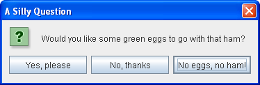 //Texto del botón personalizado Object[] options = {"Yes, please", "No, thanks", "No eggs, no ham!"}; int n = JOptionPane.showOptionDialog(frame, "Would you like some green eggs to go " + "with that ham?", "A Silly Question", JOptionPane.YES_NO_CANCEL_OPTION, JOptionPane.QUESTION_MESSAGE, null, options, options[2]); -
JOptionPane(constructor) -
Crea un
JOptionPanecon los botones, iconos, mensaje, título especificado, etc. Debe entonces añaadir el panel de opción a unJDialog, registrar un oyente de cambio-de-propiedad en el panel de opción, y mostrar el diálogo. Vea Parar el Cierre Automático de un Diálogo para los detalles.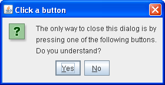 final JOptionPane optionPane = new JOptionPane( "The only way to close this dialog is by\n" + "pressing one of the following buttons.\n" + "Do you understand?", JOptionPane.QUESTION_MESSAGE, JOptionPane.YES_NO_OPTION);
Los argumentos a todos los métodos showXxxDialog y constructores JOptionPane
están estandarizados, aunque el número de argumentos para cada método y constructor varía. La siguiente lista
describe cada argumento. Para ver la lista exacta de argumentos de un método particular, vea
La IPA de Dialog.
-
Component parentComponent -
El primer argumento a cada método
showXxxDialoges siempre el componente padre, el cual debe ser un Marco, un componente dentro de un Marco, o null. si especifica un Marco o Díálogo, entonces el Diálogo aparecerá sobre el centro del Marco y sigue el comportamiento de foco de ese Marco. Si especifica un componente dentro de un Marco, entonces el Diálogo aparecerá sobre el centro de ese componente y seguirá el comportamiento de foco del componente del Marco. Si especifica null, entonces la Apariencia elegirá una posición apropiada para el diálogo ─ generalmente el centro de la pantalla ─ y el Diálogo no seguirá necesariamente el comportamiento de foco de ningún Marco o Diálogo visible.Los constructores
JOptionPaneno incluyen este argumento. En vez de eso, usted especifica el marco padre cuando crea elJDialogque contiene elJOptionPane, y usa el métodosetLocationRelativeTodeJDialogpara establecer la posición del diálogo. -
Object message -
Este argumento requerido especifica lo que diálogo visualizará en su área principal. Generalmente, usted
especifica una cadena, la cual resulta en un diálogo visualizando una etiqueta con el texto especificado.
Puede cortar el mensaje en varias líneas colocando caracteres de nueva línea (
\n) dentro de la cadena del mensaje. Por ejemplo:"Complete the sentence:\n \"Green eggs and...\"" -
String title - El título del diálogo.
-
int optionType -
Especifica el conjunto de botones que aparecen al final del diálogo. Seleccione uno de los siguientes
conjuntos estándar:
DEFAULT_OPTION,YES_NO_OPTION,YES_NO_CANCEL_OPTION,OK_CANCEL_OPTION. -
int messageType -
Este argumento determina el icono visualizado en el diálogo. Seleccione uno de los siguientes valores:
PLAIN_MESSAGE(sin icono),ERROR_MESSAGE,INFORMATION_MESSAGE,WARNING_MESSAGE,QUESTION_MESSAGE. -
Icon icon - El icono a visualizar en el diálogo.
-
Object[] options - Generalmente usado para especificar la cadena visualizada por cada botón al final del diálogo. Vea Personaliza el Texto del Botón en un Diálogo Estándar para más información. Puede ser también usado para especificar iconos a ser visualizados por los botones o los componentes no-botón a ser añadidos a la fila de botones.
-
Object initialValue - Especifca el valor por defecto a ser seleccionado.
Usted puede o permitir al panel de opción visualizar su icono por defecto o especificar el icono usando el tipo
de mensaje o el argumento icon. Por defecto, un panel de opción creado con showMessageDialog
visualiza el icono informativo, uno creado con showConfirmDialog o showInputDialog
visualiza el icono de pregunta, y uno creado con un constructor JOptionPane no visualiza ningún
icono. Para especificar que el diálogo visualize un icono estándar o ningún icono, especifique el tipo de
mensaje correspondiente al icono que desee. Para especificar un icono personalizado, use el argumento icon. El
argumento icon tiene predencia sobre el tipo de mensaje; siempre que el argumento icon tenga un valor no null,
el diálogo visualiza el icono especificado.
Personaliza el Texto del Botón
Cuando usa JOptionPane para crear un diálogo, puede o usar el texto de botón estándar (el cual
puede variar por la Apariencia y la configuración regional) o especificar un texto diferente. Por defecto, el
tipo de panel de opción determina cuántos botones aparecen. Por ejemplo, los diálogos YES_NO_OPTION
tienen dos botones, y los diálogos YES_NO_CANCEL_OPTION tienen tres botones.
El siguiente código, tomado de
DialogDemo.java, crea dos diálogos Yes/No. El primer diálogo es
implememntado con showConfirmDialog, el cual usa la misma apariencia para los
dos botones. El segundo diálogo usa showOptionDialog así que puede personalizar el
estilo. Con la excepción de los cambios de estilo, los diálogos son identicos.
| 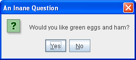 |
//icono por defecto, título personalizdo
int n = JOptionPane.showConfirmDialog(
frame,
"Would you like green eggs and ham?",
"An Inane Question",
JOptionPane.YES_NO_OPTION);
|
| 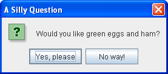 |
Object[] options = {"Yes, please",
"No way!"};
int n = JOptionPane.showOptionDialog(frame,
"Would you like green eggs and ham?",
"A Silly Question",
JOptionPane.YES_NO_OPTION,
JOptionPane.QUESTION_MESSAGE,
null, //no usa un icono personalizado
options, //los títulos de los botones
options[0]); //título del botón por defecto
|
Como los trozos de código anteriores mostraron, los métodos showMessageDialog,
showConfirmDialog, y showOptionDialog devuelven un entero indicando la elección del
usuario. Los valores para este entero son YES_OPTION, NO_OPTION,
CANCEL_OPTION, OK_OPTION,
y CLOSED_OPTION. Excepto para CLOSED_OPTION, cada opción corresponde al botón que el
usuario presionó. Cuando se devuelve CLOSED_OPTION , esto indca que el usuario cerró la ventana de
diálogo explícitamente, en vez de elegir un botón dentro del panel de opción.
Incluso si cambia las cadenas que los botones de diálogo estándar muestran, el valor devuelto es aún uno de los
enteros pre-definidos. Por ejemplo, un diálogo YES_NO_OPTION siempre devuelve uno de los siguientes
valores: YES_OPTION, NO_OPTION, o CLOSED_OPTION.
Obtener la Entrada del Usuario desde un Diálogo
La única forma de showXxxDialog que no devuelve un entero es showInputDialog,
la cual devuelve un Object en su lugar. Este Object es generalmente una
Cadena reflejando la elección del usuario. Aquí tiene un ejemplo usando
showInputDialog para crear un diálogo que permite al usuairo seleccionar una de tres cadenas:
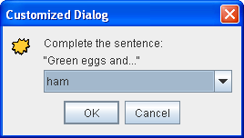
Object[] possibilities = {"ham", "spam", "yam"};
String s = (String)JOptionPane.showInputDialog(
frame,
"Complete the sentence:\n"
+ "\"Green eggs and...\"",
"Customized Dialog",
JOptionPane.PLAIN_MESSAGE,
icon,
possibilities,
"ham");
//Si se devuelve una cadena, dilo.
if ((s != null) && (s.length() > 0)) {
setLabel("Green eggs and... " + s + "!");
return;
}
//Si estás aquí, el valor devuelto fue nulo o vacío.
setLabel("Come on, finish the sentence!");
Si no quiere limintar las elecciones del usuairo, puede o usar una forma del método showInputDialog
que toma menos argumentos o especificar null para la matriz de objetos. En la Apariencia Java
sustituir null por possibilities resulta en un diálogo que tiene un campo de texto
y se parece a esto:
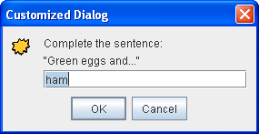
Debido a que el usuario puede escribir cualquier cosa en un campo de texto, es posible que desee comprobar el
valor devuelto y solicitar al usuario que lo intente de nuevo si este es inválido. Otro enfoque es crear un
diálogo personalizado que valide los datos introducidos por el usuario antes de que retorne. Vea
CustomDialog.java para un ejemplo de validación de datos.
Si usted está diseñando un diálogo personalizado, necesita diseñar su IPA de diálogo de forma que pueda
preguntar al diálogo sobre qué selección el usuario. Por ejemplo, CustomDialog tiene un método
getValidatedText
que devuelve el texto que el usuario introdujo.
Parar el Cierre Automático de un Diálogo
Por defecto, cuando el usuario pulsa un botón creado por JOptionPane, el diálogo se cierra. ¿Pero
qué pasa si usted queire comprobar la respuesta del usuario antes de cerrar el diálogo? En este caso, usted debe
implementar su propio oyente de cambio de propiedad de forma que cuando el usuario pulse un botón, el diálogo
no se cierre automáticamente.
DialogDemo contiene dos diálogos que implementan un oyente de cambio de propiedad. Uno de esos
diálogos es un diálogo modal personalizado, implementado en
CustomDialog, que usa JOptionPane para obtener el
icono estándar y asistencia de disposición. El otro diálogo, cuyo código está debajo, usa un
JOptionPane estándard Yes/No. Aunque éste diálog es bastante inútil como está escrito, su código es
lo bastante simple para que pueda usarlo como plantilla para diálogos más complejos.
Además de establecer el oyente de cambio de propiedad, el código siguiente también llama al método
setDefaultCloseOperation de JDialog e implementa un oyente de ventana que maneja el
intento de cierre de ventana apropiadamente. Si no le importa ser notificado cuando un usuario cierra la
ventana explícitamente, entonces ignore el código en negrita.
final JOptionPane optionPane = new JOptionPane(
"The only way to close this dialog is by\n"
+ "pressing one of the following buttons.\n"
+ "Do you understand?",
JOptionPane.QUESTION_MESSAGE,
JOptionPane.YES_NO_OPTION);
final JDialog dialog = new JDialog(frame,
"Click a button",
true);
dialog.setContentPane(optionPane);
dialog.setDefaultCloseOperation(
JDialog.DO_NOTHING_ON_CLOSE);
dialog.addWindowListener(new WindowAdapter() {
public void windowClosing(WindowEvent we) {
setLabel("Thwarted user attempt to close window.");
}
});
optionPane.addPropertyChangeListener(
new PropertyChangeListener() {
public void propertyChange(PropertyChangeEvent e) {
String prop = e.getPropertyName();
if (dialog.isVisible()
&& (e.getSource() == optionPane)
&& (prop.equals(JOptionPane.VALUE_PROPERTY))) {
//Si usted fuera a comprobar algo
//antes de cerrar la ventana, usted lo haría
//aquí.
dialog.setVisible(false);
}
}
});
dialog.pack();
dialog.setVisible(true);
int value = ((Integer)optionPane.getValue()).intValue();
if (value == JOptionPane.YES_OPTION) {
setLabel("Good.");
} else if (value == JOptionPane.NO_OPTION) {
setLabel("Try using the window decorations "
+ "to close the non-auto-closing dialog. "
+ "You can't!");
}
La IPA de Dialog
Las siguientes tablas listan los constructores de JOptionPane y los métodos de JDialog
mas comunmente usados. Otroso métodos que le gustaría llamar están definidos por las clases
Dialog,
Window y
Component e
incluyen pack, setSize, y setVisible.
La IPA está listada como sigue:
- Mostrar Diálogos Modales Estándar (usando Métodos de la Clase
JOptionPane) - Métodos para Usar
JOptionPanes Directamente - Constructores y Métodos de
JDialogFrecuentemente Usados
| Método | Propósito |
|---|---|
|
static void showMessageDialog(Component, Object)
static void showMessageDialog(Component, Object, String, int) static void showMessageDialog(Component, Object, String, int, Icon) |
Muestra un diálogo modal, de un solo botón que da al usuario alguna información. Los argumentos especifican (en orden) el componente padre, mensaje, título, tipo de mensaje, e icono para el diálogo. Vea Crear y Mostrar Diálogos Simples para una descripción de los argumentos y sus efectos. |
| static int showOptionDialog(Component, Object, String, int, int, Icon, Object[], Object) | Muestra un diálogo modal personalizado. Los argumentos especifican (en orden) el componente padre, mensaje, título, tipo de opción, tipo de mensaje, icono, opciones, y el valor inicial para el diálogo. Vea Crear y Mostrar Diálogos Simples para una descripción de los argumentos y sus efectos. |
|
static int showConfirmDialog(Component, Object)
static int showConfirmDialog(Component, Object, String, int) static int showConfirmDialog(Component, Object, String, int, int) static int showConfirmDialog(Component, Object, String, int, int, Icon) |
Muestra un diálogo modal que pregunta al usuario una pregunta. Los argumentos especifican (en orden) el componente padre, mensaje, título, tipo de opción, tipo de mensaje, y el icono para el diálogo, Vea Crear y Mostrar Diálogos Simples para una descripción de los argumentos y sus efectos. |
|
static String showInputDialog(Object)
static String showInputDialog(Component, Object) static String showInputDialog(Component, Object, String, int) static String showInputDialog(Component, Object, String, int, Icon, Object[], Object) |
Muestra un diálogo modal que pregunta al usuario por una entrada de daos. La versión de argumento-único especifica tan solo el mensaje, con el componente padre asumido que sea null. Los argumentos para las otras versiones especifican (en orden) el componente padre, mensaje, título, tipo de mensaje, icono, opciones, y el valor inicial para el diálogo. Vea Crear y Mostrar Diálogos Simples para una descripción de los argumentos y sus efectos. |
|
static void showInternalMessageDialog(...)
static void showInternalOptionDialog(...) static void showInternalConfirmDialog(...) static String showInternalInputDialog(...) |
Implementa un diálogo estándar como un marco interno. Vea la
documentación del IPA de JOptionPane para la lista exacta de argumentos.
|
| Método o Constructor | Propósito |
|---|---|
|
JOptionPane()
JOptionPane(Object) JOptionPane(Object, int) JOptionPane(Object, int, int) JOptionPane(Object, int, int, Icon) JOptionPane(Object, int, int, Icon, Object[]) JOptionPane(Object, int, int, Icon, Object[], Object) |
Crea una instancia de JOptionPane. Vea
Crear y Mostrar Diálogos Simples para una descripción de los argumentos y sus
efectos.
|
|
static Frame getFrameForComponent(Component)
static JDesktopPane getDesktopPaneForComponent(Component) |
Métodos prácticos de la clase JOptionPane que buscan el marco o el
panel de escritorio, respectivamente, en el que está el
componente especificado.
|
| int getMaxCharactersPerLineCount() |
Determina dónde se insertarán automáticamente los saltos de línea en el texto del panel de opciones.
(El valor por defecto es Integer.MAX_VALUE). Para usar este método, debe crear una subclase
de JOptionPane. Por ejemplo, el código siguiente resulta en un panel de opciones con una
palabra por línea, debido al hecho de que cada palabra de la cadena es de 5 caracteres o menos:
JOptionPane op = new JOptionPane("This is the text.") {
public int getMaxCharactersPerLineCount() {
return 5;
}
};
|
| Método o Constructor | Propósito |
|---|---|
|
JDialog()
JDialog(Dialog) JDialog(Dialog, boolean) JDialog(Dialog, String) JDialog(Dialog, String, boolean) JDialog(Dialog, String, boolean, GraphicsConfiguration) JDialog(Frame) JDialog(Frame, boolean) JDialog(Frame, String) JDialog(Frame, String, boolean) JDialog(Frame, String, boolean, GraphicsConfiguration) JDialog(Window owner) JDialog(Window owner, Dialog.ModalityType modalityType) JDialog(Window owner, String title) JDialog(Window owner, String title, Dialog.ModalityType modalityType) JDialog(Window owner, String title, Dialog.ModalityType modalityType, GraphicsConfiguration gc) |
Crea una instancia de JDialog. El argumento Frame, si lo hay, es el marco
(usualmente un objeto JFrame) del que diálogo depende. Haga el argumento booleano
true para especificar un diálogo modal, false o ausente para especificar un
diálogo no modal. Puede tambien especificar el título del diálogo, usando un argumento de cadena.
|
|
void setContentPane(Container)
Container getContentPane() |
Obtiene o establece el panel de contenido, el cual es usualmente el contenedo de todos los componentes del diálogo, Vea Usando Contenedores de Nivel Superior para más información. |
|
void setDefaultCloseOperation(int)
int getDefaultCloseOperation() |
Obtiene o establecer qué ocurre cuando el usuario intenta cerrar el diálogo. Valores posibles:
DISPOSE_ON_CLOSE, DO_NOTHING_ON_CLOSE, HIDE_ON_CLOSE (por
defecto). Vea Responder a Eventos de Cierre de Ventana para más
información.
|
| void setLocationRelativeTo(Component) | Centra el diálogo sobre el componente especificado. |
|
static void setDefaultLookAndFeelDecorated(boolean)
static boolean isDefaultLookAndFeelDecorated() |
Establece u obtiene una pista sobre si las decoraciones de ventana de diálogo (como bordes, o widgets para cerrar la ventana) debe ser proporcionada por la apariencia actual. De otra forma las decoraciones de la ventana serán ofrecidas por el gestor de ventanas actual. Vea Especificar Decoraciones de Ventana para más información. |
Ejemplos que Usan Diálogos
Esta tabla lista ejemplos que usan JOptionPane o JDialog. Para encontrar otros
ejemplos que usen diálogos, vea las listas de ejemplo para
barras de progreso, selectores de color, y
selectores de fichero.
| Ejemplo | Dónde está Descrito | Notas |
|---|---|---|
DialogDemo,
CustomDialog
|
Esta sección |
Crea muchas clases de diálgoos, usando JOptionPane y JDialog.
|
Framework
|
─ | Activa un diálogo de confirmación cuando el usuario selecciona el elemento de menú Salir. |
ListDialog
|
Cómo Usar BoxLayout |
Implementa un diálogo modal conteniendo una lista con desplazamiento y dos botones. No usa
JOptionPane, excepto para el método de utilidad getFrameForComponent.
|